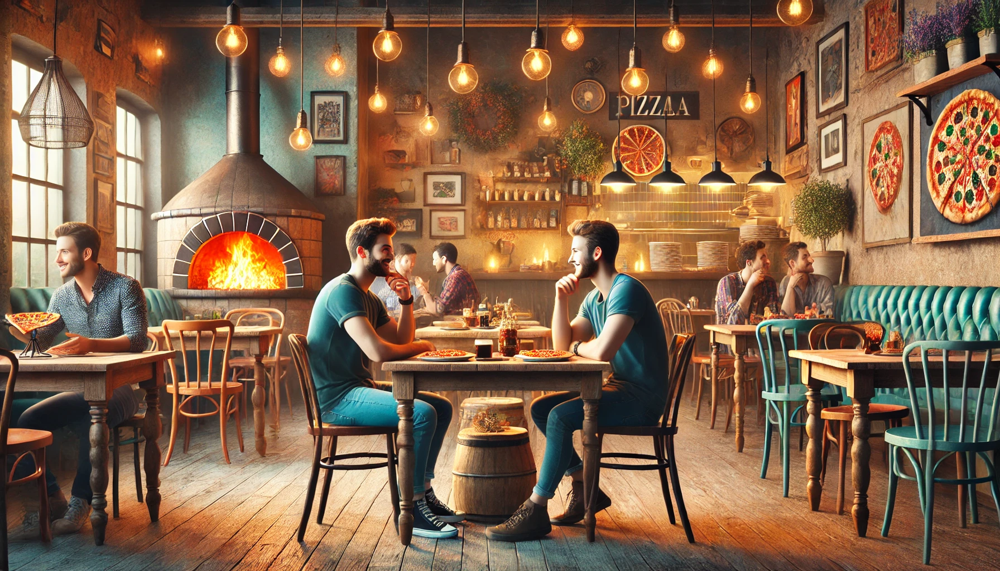

Tijl Berlage en zijn Pizzadroom
Tijl Berlage was altijd al een jongen met grote dromen. Opgegroeid in een klein huisje aan de rand van Rotterdam, had hij als kind al een voorliefde voor koken. Zijn moeder, een Italiaanse immigrant, bracht haar avonden door in de keuken en leerde Tijl de geheimen van authentieke Italiaanse recepten. Terwijl zijn vrienden buiten voetbalden, stond Tijl naast zijn moeder deeg te kneden of tomatensaus te maken.
Maar het was één bijzondere zomer in Italië die alles veranderde. Tijl was dertien toen hij met zijn moeder naar het dorp van zijn opa reisde, ergens in Toscane. Daar proefde hij een pizza die zijn leven veranderde. De krokante korst, de frisse tomatensaus, de geur van verse basilicum, het was alsof hij een stukje hemel proefde. Die dag wist Tijl het zeker: hij zou zijn eigen pizzarestaurant openen en mensen laten genieten van dezelfde magie.
Van droom naar realiteit
Het pad naar zijn droom was niet makkelijk. Tijl ging naar een horecaopleiding in Rotterdam en werkte jarenlang als pizzabakker in verschillende restaurants. Hij leerde niet alleen de kneepjes van het vak, maar ook hoe een restaurant succesvol gerund moest worden. Toch miste hij iets: de vrijheid om zijn eigen visie te volgen.
Op een regenachtige dag in de herfst van 2024 besloot Tijl dat het tijd was om de sprong te wagen. Met de kleine spaarrekening die hij had opgebouwd en een lening van de bank, huurde hij een knusse ruimte in het centrum van Rotterdam. Het pand had jaren als boekwinkel gediend en stond al maanden leeg. Met de hulp van vrienden en familie toverde hij het om tot een warm, uitnodigend pizzarestaurant.
Tijl's Pizza's
Op een frisse decemberavond opende Tijl's Pizza's officieel zijn deuren. Het restaurant was klein maar sfeervol, met houten tafels, rood-wit geruite tafelkleden, en een open keuken waar klanten Tijl en zijn team aan het werk konden zien. De menukaart was simpel maar doordacht: een mix van klassieke Italiaanse pizza's zoals Margherita en Pepperoni
Het geheim van zijn succes? Alles was vers. Tijl haalde zijn ingrediënten dagelijks bij lokale markten en importeerde speciale producten rechtstreeks uit Italië. Bovendien stond hij erop dat het deeg minimaal 48 uur rijpte, wat zorgde voor een lichte, luchtige korst.
Een gemeenschap
Tijl's Pizza's werd al snel een begrip in Rotterdam. Buurtbewoners kwamen langs voor een snelle lunch, jonge stellen genoten van een romantisch diner, en families vierden verjaardagen. Tijl kende al zijn vaste klanten bij naam en vond het belangrijk om een band met hen op te bouwen.
Op vrijdagavond organiseerde hij zelfs pizzaworkshops voor kinderen. “Als ik ooit een kind inspireer om zijn of haar dromen te volgen, zoals mijn moeder dat bij mij deed, dan is mijn missie geslaagd,” zei hij vaak.
Een droom die doorgaat
Tijl's restaurant was meer dan alleen een plek om pizza te eten. Het werd een symbool van doorzettingsvermogen en passie. Hoewel de eerste jaren niet zonder uitdagingen waren – van stijgende kosten tot lastige concurrentie – bleef Tijl volhouden. Zijn liefde voor het vak en zijn connectie met de gemeenschap hielden hem op koers.
Vandaag de dag is Tijl's Pizza's niet alleen een favoriet in Rotterdam, maar ook een inspiratiebron voor jonge ondernemers. En terwijl Tijl elke avond in zijn keuken staat, met het geluid van lachende klanten op de achtergrond, weet hij dat hij precies op de juiste plek is. Zijn droom werd werkelijkheid, en hij bracht een stukje Toscane naar Rotterdam.
